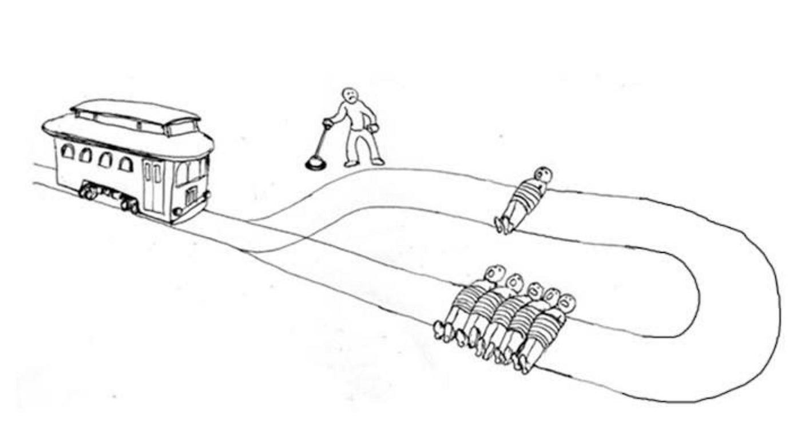

“A bystander happens to be standing by the track, next to a switch that can be used to turn the tram off the straight track, on which five [...people] are working, onto a spur of track to the right on which only one [...person] is working. The bystander therefore has only two options: [...] (i) do nothing, letting five die, or (ii) throw the switch to the right, killing one” (Thomson 2008, p. 361)
